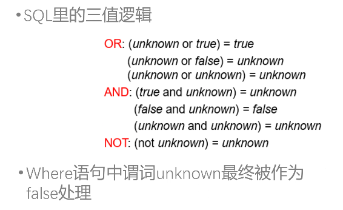
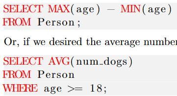
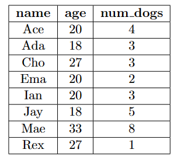
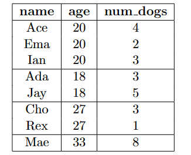

SQL
SQL的类别
- DDL 表的定义和定义的修改，数据完整性的设置 create, alter, drop
- DML 表内数据的增删查改 select, insert
- DCL 数据控制，数据权限的修改 Grant, revoke
数据类型的创建
DDL
创建视图*
视图的操作，与原表的完整性约束问题
建立schema，table，view and index
drop的同时可以选择 restrict模式和cascade模式，也就是限制删除和强制级联删除
DML
basic query
这部分主要处理是筛选的需求
the fundamental SQL query
1 2 | |
选择哪个表（table）,选择这个表里的哪些attributes,(columns) 并且全部输出，from里面有多个表，意味这个表之间需要做笛卡尔积
select内部可以做操作，比如给所有输出x10
如果使用SELECT DISTINCT，会在输出中删除重复的部分。
tips：在不加说明的情况下，输出表的内容是unorder的
对于select可以修饰 distinct 去重复
where
1 2 3 | |
上述是一个简单例子，很多时候我们只关注table里面的几行内容，因此有WHERE关键词，后面加上的一个条件判断符。
tips：SQL语句的执行顺序，是按照顺序执行，但是SELECT语句是最后执行的
对上述代码就是，先找到Person这个表，再找到age这个属性大于18的行，再输出这些行的name和num_dog列
1 | |
Tips: 在筛选字符串的时候，存在一些方式，使用%，_ 等特殊字符，可以做模糊查询
boolean operators
SQL有基础的AND NOT OR三个布尔逻辑符号，来链接WHERE内部的逻辑关系
1 2 3 | |
Tips: SQL里面的NULL在做逻辑操作时需要特殊考虑，如下图

- var is null
- var is not null
aggregate functions
这些函数用来处理整个column，做一些统计工作，一般会返回一个value（其实本质上是一行一列的表？），其在处理的时候会跳过NULL值，但是在COUNT（*）时不会跳过
基础的aggregate function有以下几个
1 2 3 4 5 | |
上述函数一般在SELECT选择column的时候调用，默认情形下是all，必要时可以加distinct
1 | |

要注意的是，聚合函数不可直接用于where语句中，只可以用于select和having
GROUP BY 和 HAVING
1 2 | |
GROUP BY的意思是把列表按照一个列分组（把这个组的相同value分为同一个组），其最终的结果可以促使aggregate function的输出不再是一个一行一列的table。GROUP BY age其效果如下图
GROUP BY和aggregate function经常放在一起使用

----->
其中的HAVE语句就是对分出来的各个GROUP做筛选，例如COUNT(*) > 1 最后一个GROUP就会被筛掉
- WHERE 作用与GROUP BY之前
- HAVING 作用于之后
1 2 3 4 5 | |
ORDER BY
对于其进行排序的做法，在末尾进行ASC或者DESC，默认是ASC
AS
是对于数据表做重命名的操作，当我们需要把一个表自己和自己做笛卡尔积的时候，需要做重命名，注意以下的执行顺序，该重命名在后续操作中均生效，包括嵌套子查询中
join
- on 和 where什么时候相同
我们时常需要把多个表格联动起来一起分析，例如
1 2 3 | |
如果不加WHERE语句的话，数据库系统会直接把两个表的row做笛卡尔积，这往往不是我们需要的，因此需要一些限制条件
1 2 | |
这个做法和前面的代码看似相同，但是前面那个会把相同名称的属性分两个展现出来，而natural join会合并这两个属性列
join也有多种形式，上述的形式是最直接的
- cross join 默认的形式，就是上述情况，只生成匹配条件的table
- inner join 必须是A中有，B中也有
- outer join 以一个表为主体，如果另一个table没有匹配的话，就生成NULL
- natural join 对于两个表中存在的相同名称的属性做join，相当于一个语法糖，但并不常用，只有natural join和使用using的情况会把表的重复属性给重合掉
- 普通的join相当于笛卡尔积，
table1 join table2 相当于table1, table2
多重的natural join是按照左到右顺序执行
using关键词
使用using(属性名)可以指出两个要做join的表，哪个属性需要相同
on
而更常用的是可以用on关键词，见下文的例子
outer join
确保左表的每一行都被输出，没有匹配的用NULL补齐
1 2 3 | |
我们还可以选择
- RIGHT OUTER JOIN 确保右表的每一行都被输出
- FULL OUTER JOIN 两个表的每一行都要被输出
tips：我们最好在使用属性的时候，用table.attribute来限定范围，例如 courses.num = enrollment.c_num
同时我们还有一个语法糖是我们可以在引入表的时候 加上AS 来在本次语句将其重命名，以便使用起来更方便
1 2 3 | |
集合操作
- union
- except 删除集合中的反例，代表关系代数中的“-”
在取反操作中很常见
subqueries
嵌套的查询使得SQL的功能更加的完整
我们可以在条件语句和FROM语句加入subqueries
1 2 3 4 5 6 | |
同时为了防止多层的嵌套使得可读性严重下降，我们可以用WITH语句给子查询一个名称，with语句可以同时定义多个
1 2 3 4 5 6 7 8 | |
- FROM 只要产生的是关系即可
- WHERE 可以替换成 B operation subquery operation 常用 in 和 not in
- SELECT 需要是一个single value
1 2 3 4 5 6 7 | |
in的前后也可以是属性的集合，只要一一对应即可 例如(course_id,name) in (select course_id, name ...)
some
some 是指某个的意思
1 2 3 | |
这里只要我们的id大于后面这个子查询产生的id列中的任意一个值即可，operation并不仅限于> 可以是 <, =, !=, >=, <=
= some() 也就是存在一个相等即可
all
与some相对应，做法完全相同，要求id大于所有子查询中的id
exists 和 not exists
1 2 3 | |
注意子查询使用的S已经经过前面的筛选，子查询不为空即可
unique
uniue用法和exists等用法相同，针对后面的table，若其有重复元组，则返回false；反之则为true
except 与 关系代数中的 '-' 正交
as可以对于列也同时重命名
1 | |
scalar 标量子查询，指的是指返回一个value的情形
1 2 3 4 | |
这里的select里面就不是一个属性，单纯是一个值，并且这个子查询返回的value只能是一个，这种情况下，可以不需要some，all做比较
in and not in
该特定的记录是否在子查询中存在过
可以用some, all, any 替代，形似语法糖
update
case语句*
case语句可以构成分段的操作，适用于update语句，例如
1 2 3 4 5 6 | |
错误的SQL
最后SQL的结果是由SELECT语句确定，我们需要确定的是，这里面所有的columns拥有相同数量的rows，例如对于上述这个例子
1 2 3 4 5 | |
如果不加上AVG，那么就会报错，因为age其实已经被划分了，所有相同数值的age被划分成了一个，但nums_dogs并未被划分，因此会导致数量不对齐
DBMS 使用 以sqlite为例
环境：Ubuntu2204 sqlite3
打开的方式 sqlite3 file.db 退出终端 ctrl-d
一个db文件在DBMS视角下一般由多个table构成，可以用.table的指令查看所有的table
-
.schema tablename 来查看每个table的attributes - 可以直接在终端编写sql 查询，要记得在结尾加上‘；’作为一个sql查询指令的结尾
-
.read sqlfilename 多数时候我们把sql文件写在外面，可以通过.read指令直接调用外部sql文件里的sql指令
创建一个数据库
touch test.db
- 表的创建
1 2 3 4 5 6 7 | |
1 2 | |
数据库中的主键
1 2 3 | |
数据库中的增删查改
详见project
- deletion
delete from xxx where xxx - insert
insert into xxx (....) values (....) value可以用null也可以用default 插入也可以和select结合起来 见PPT - update
update instructor set salary = salary * 1.05 这里面的数据可以用嵌套子查询替换，实现更加复杂的update